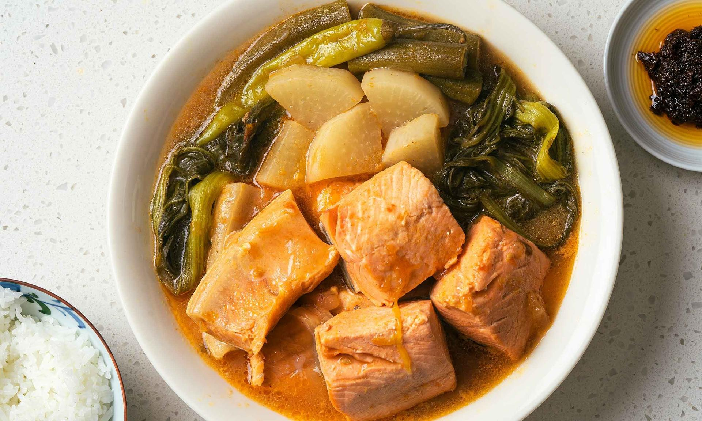

Recipe: Salmon Sinigang
A warm and tangy Filipino sour soup made with salmon and vegetables.

Start Cooking
Step 1: Gather Ingredients
2 tablespoon oil
3 cloves garlic
1 medium onion
1 thumb ginger
6 pieces tomatoes
1 ¼ cup miso paste
6-8 cups water
1 medium radish
3 tablespoon tamarind soup mix
1 pound salmon
3 pieces long chilis (siling haba)
6 pieces okra
1 medium eggplant
1-2 bunch mustard leaves
Salt to taste
Step 2: Saute Aromatics
Heat oil in a large pot, then sauté garlic, onion, and ginger until aromatic. Add chopped tomatoes and cook until softened.
Step 3: Add Miso and Broth
Add miso paste and cook for 2 minutes. Pour in water, mix well, and bring to a boil.
Step 4: Add Vegetables and Seasonings
Add radish and cook until tender. Stir in tamarind soup mix and salt.
Step 5: Cook the Salmon and Vegetables
Add salmon fillets, okra, eggplant, and long chilis. Gently mix and cook for 5 minutes until fish and vegetables are cooked through.
Step 6: Add Mustard Leaves and Serve
Stir in mustard leaves, cook for another minute, then remove from heat. Serve and enjoy!
Final Output
Your Salmon Sinigang is ready to be served! Enjoy your meal!
Nutrition Facts
Calories: 318KCAL
Carbohydrates: 27G
Protein: 24G
Fat: 13G
Saturated Fat: 2G
Polyunsaturated Fat: 5G
Monounsaturated Fat: 5G
Trans Fat: 0.02G
Cholesterol: 42MG
Sodium: 2311MG
Potassium: 764MG
Fiber: 6G
Sugar: 10G
Vitamin A: 124IU
Vitamin C: 4MG
Calcium: 72MG
Iron: 3MG